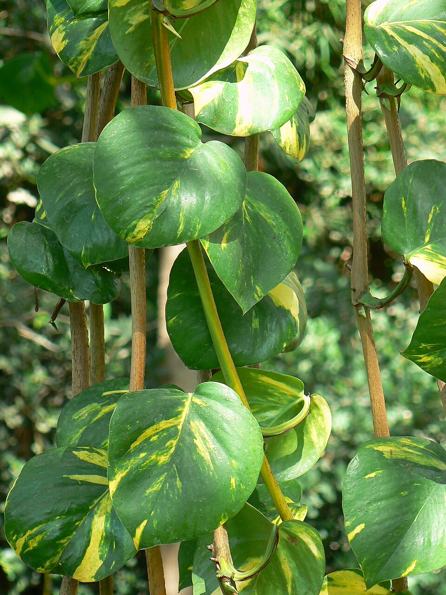

Potus

Epipremnum aureum
Trepadora de hojas acorazonadas y variegadas, famosa por ser prácticamente indestructible. Crece en agua o en tierra y, con un tutor, supera los dos metros.
- Luz Luz media indirecta; tolera zonas poco iluminadas
- Riego Moderado: regar cuando los 2-3 cm superiores del sustrato estén secos
- Origen Sudeste asiático (Malasia, Indonesia) y Nueva Guinea
Categorías
- Trepadoras
- De interior
- Aptas para maceta
- Media sombra
- Sombra
- Tropicales
- Follaje decorativo
- Colgantes
- Bajo mantenimiento